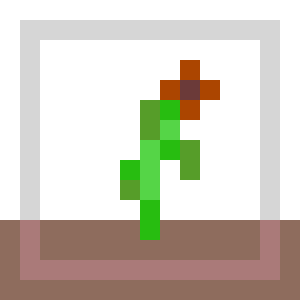
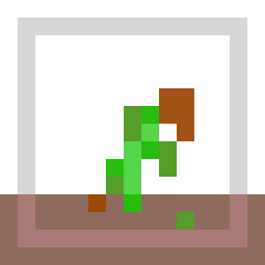

Hello, here I am, a beautiful flower.
I live on this webpage and my roots crave the hydration of $('.water').click(function().
Without regular watering I will wither and die.
Keep in mind that I survive in real time, and closing your browser does not pause my existence.
~ water ~
water

R.I.P